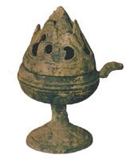
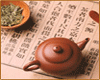
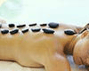
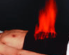
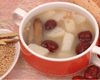
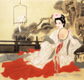

本站首页
中医简史
中医特色
中医常识
中医刮痧
中医新闻
中医特色
中医学经受了历史长河变迁的洗刷，为人类的生存繁衍作出了重要贡献。在现代医学快速发展的今天，中医在我国医疗保健、科研、教学、学术创新等诸多方面有其独有的特色和优势，显示了不可替代的作用，长久以来历代民医利用他们的聪明才智总结出了一套很有特色的治疗和保健的方法，如中医拔罐、中医膏药、中医刮痧、中医火疗、中医气功、中医推拿、中医药茶、中医药酒、中医药浴、中医针灸、自然疗法...
更多
中医药酒
中医药酒
药酒中主要具有补血益气、滋阴温阳的滋补强身之品，同时酒本身又有辛散...
药酒之用及历史沿革
正确自制中药养生酒
枸杞泡酒治静脉曲张效果好
《疯狂外星人》与药酒的应用
元胡归红酒治气滞血瘀痛经
羌活枸杞酒治肩臂痛
更多
中医药茶

中医药茶
药茶是在茶叶中添加食物或药物制作而成的具一定疗效的特殊的液体饮料...
橄榄萝卜茶治小儿感冒
养生药茶有“偏性” 喝前一定要辨证
深秋自制养生茶 陶冶性情，养生保健
品茗论茶道 谈谈六类茶叶的不同功效
秋令行燥润燥茶 清热生津芦根饮
秋季嗓子干、时痛，7款茶饮辩证用
更多
中医膏药

中医膏药
膏药是中药外用的一种，古称薄贴,早在久远的年代，我国医学家就有言曰...
冬日“膏方”进补效果好 服用“注意事项”不能忘
五月入夏桑葚甜 熬成膏方补肾肝
一勺膏方十碗药
防雾霾中医膏方
补虚调理话膏方
冬令补肾膏方最适宜
更多
中医火疗

中医火疗
火疗是采用最古老的医术—“熏蒸技术”与现代医学—“透皮吸收技术”...
火疗的阴阳学说原理
火疗的藏象学说原理
火疗的经络学说原理
火疗的中医内病外治理论
火疗的现代医学原理
火疗的点火、灭火手法
更多
偏方秘方
偏方秘方
偏方秘方是历代医家在经验中总结出一套具有独特疗效的药方，这些偏方秘方...
中医小验方五则
咽喉病小验方
人参生地治老年性白内障
盐知母治早泄
炉甘石常用验方
丹参治炎性包块
更多
中医药粥

中医药粥
药粥就是以谷类为主，配合中药及药食同源的食物制成的稀粥。是在中医理论...
冬季干燥又寒冷 润肺止咳选粥品
冬季天气寒冷“易伤阳” 五款御寒养生粥请品尝
车前叶粥利尿明目
车前叶粥利尿明目
中药粥治疗产后缺乳
葛花粥可解酒毒[图]
更多
中医脐疗
中医脐疗
脐疗就是把药物直接敷贴或用艾灸、热敷等方法施治于患者脐部，激发经络之气...
老年便秘中医敷脐方四则
敷脐法治失眠
敷脐方治疗妇女常见病
肚脐敷药 缓解痛经
慢支咳嗽脐疗7方
玄明粉敷脐治疗长期便秘
更多
中医艾灸
中医艾灸
中医艾灸是用艾叶制成的艾灸材料产生的艾热刺激体表穴位或特定部位，通过激...
“艾灸之灰”别倒掉，变废为宝8妙招
艾灸防治春季4种多发病
冬季扶阳“三九灸”，祛除寒病又养阴
天灸可提高哮喘儿童肺通气功能
急慢性前列腺炎的艾灸治疗
冬日“艾灸养阳”有诀窍 你必须了解的艾灸知识
更多
中医气功
中医气功
气功是我国特有的一种健身术。基本分两大类，一类以静为主，静立、静坐...
阴阳平衡的六分钟无名桩
无名桩的练法
定步动功法
抻筋强腰功治腰部不适
天人合一的八段锦
八段锦练法与作用
更多
自然疗法

自然疗法
自然疗法是以人体健康为核心,重点强调维持身体健康和预防疾病...
药敷掌心疗法
简便易行的热熨法
放血疗法治哪些病
药熨疗法
取嚏法
贴敷疗法
网站搜索
中医点穴
脏腑点穴调理脾胃不适症
胸痛点穴疗法
头痛点穴疗法
腰椎间盘突出综合征点穴疗法
急性腰扭伤点穴疗法
近视点穴疗法
便秘点穴疗法
高血压点穴疗法
中医药枕
心悸药枕疗法
头痛药枕疗法
头晕药枕疗法
健忘药枕疗法
失眠药枕疗法
咳嗽药枕疗法
眼花药枕疗法
颈椎病药枕疗法
药物熏洗
醋煎皂角刺熏洗治足跟痛
中药熏洗防治手脚多汗
腰椎骨质增生熏洗疗法
风湿性关节炎熏洗疗法
便秘熏洗疗法
腹泻熏洗疗法
不孕熏洗疗法
鼻炎熏洗疗法
中医砭石
砭石疗法 “开泻”不耗正气
砭石疗法手法大全
砭石疗法的前世今生
砭石的养生作用
砭石的五大特性
如何辨别砭石真假
砭石的远红外线作用
砭石的超声波作用
穴位埋线
什么是穴位埋线
穴位埋线技术的历史发展
穴位埋线的中医理论原理
穴位埋线的现代医学原理
>穴位埋线技术的器具
穴位埋线的针具选择、保养与维修
穴位埋线技术的技术规范
穴位埋线技术的环境要求
穴位注射
穴位注射法的适应范围
什么是穴位注射
穴位注射技术的基本原理
穴位注射技术的药物制备
穴位注射的常用穴位
穴位注射技术的技术规范
穴位注射技术的操作规程
药摩疗法
什么是药摩
药摩技术的历史发展
药摩技术的中医理论原理
药摩技术的现代医学原理
药摩技术的常见剂型
药摩技术的工具选择
药摩技术常用部位与穴位
药摩技术的操作规程
疾病分类
急症处理
传染病与寄生虫病
呼吸系统疾病
心血管疾病
消化系统疾病
分泌、代谢、营养和肾脏疾病
血液系统疾病
常见外科疾病
颅脑疾病
颈部和乳房疾病
 中医气功
中医气功